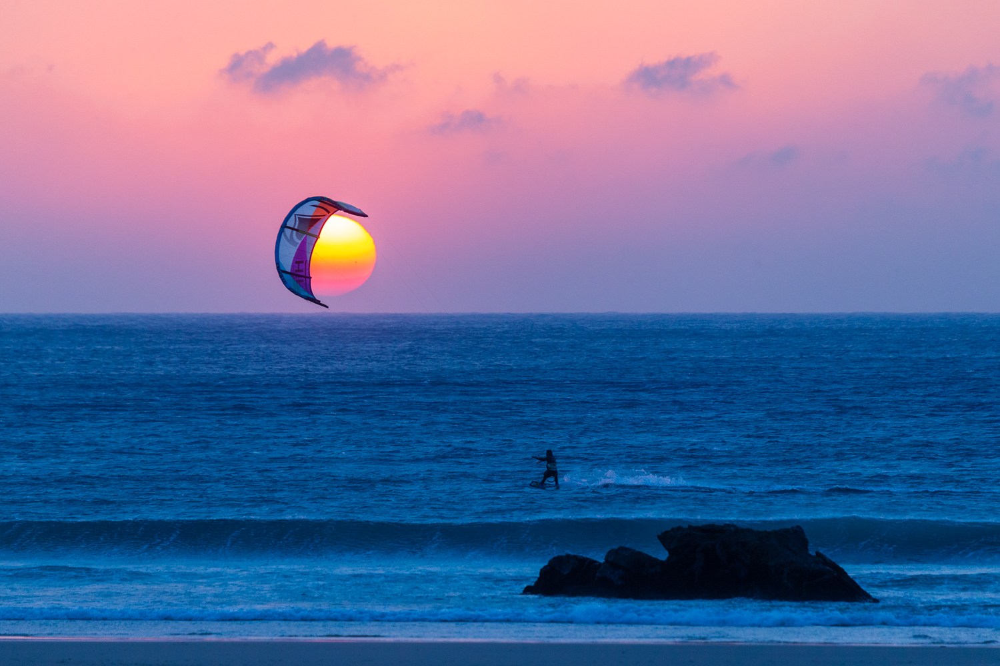
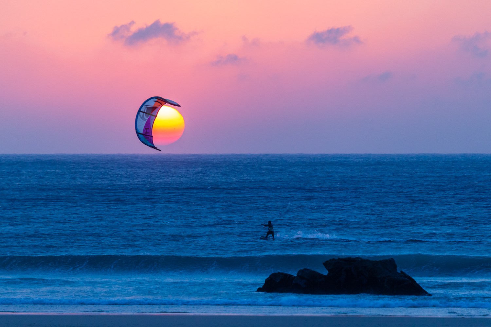

Medidor de velas
Segun la intensidad del viento es recomendado usar una vela adecuada a la situacion, por eso desarrollamos nuestro medidor, para que sepas que vela usar.
Segun la intensidad del viento es recomendado usar una vela adecuada a la situacion, por eso desarrollamos nuestro medidor, para que sepas que vela usar.
